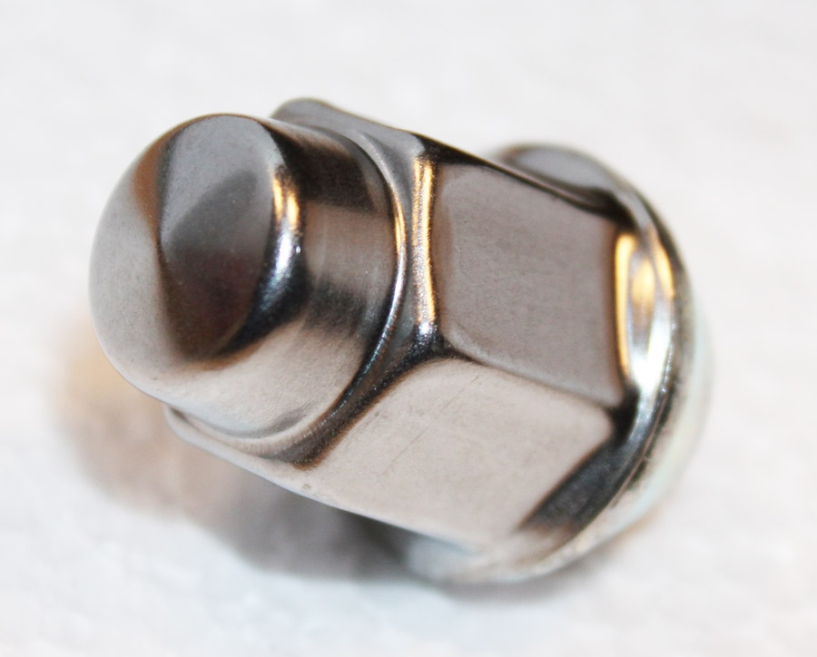
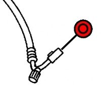

1996 - 2015 Dodge Viper SRT10 Wheel Lug Nut - 06036747AA
Part # 6036747AA
$8.00
Price as of 2026-07-13 archive
Out of stock when archived
Contact to orderor email info@PartsRack.com · 360.837.3937
| Part number | 6036747AA |
|---|---|
| Mopar part # | 06036747AA |
| Fits years | 1996-2015 |
| Models | Viper, SRT10 |
| Category | Fasteners & Hardware, Wheels |
Description
1996 - 2015 Dodge Viper SRT10 Wheel Lug Nut
*NEW*
Mopar Part # 06036747AA
Ships in 3 - 5 business days ***
Price is for ONE lug nut, 2pc with pressed-on chrome cap. OE Equipment
****We offer 1pc CHROME or BLACK lugnet SETS at www.partsrack.com. $69 and $99/set of 25 respectively e-mail jonb@partsrack.com
Archived 2026-07-13 · view original capture
More in Fasteners & Hardware

2003 - 2016 Dodge Viper SRT10 Push Pin - 06504521
Part # 6504521
$9.30

2003 - 2010 Dodge Viper SRT10 TPMS Nut - 52088961AA
Part # 52088961AA
$4.00
 Out of stock
Out of stock2008 - 2010 Dodge Viper ACR Shock Adjustment Tool - 5181441AA
Part # 5181441AA
$38.00

1996 - 2008 Dodge Viper A/C Drier Line O-Ring - 05066637AA
Part # 05066637AA
$5.50